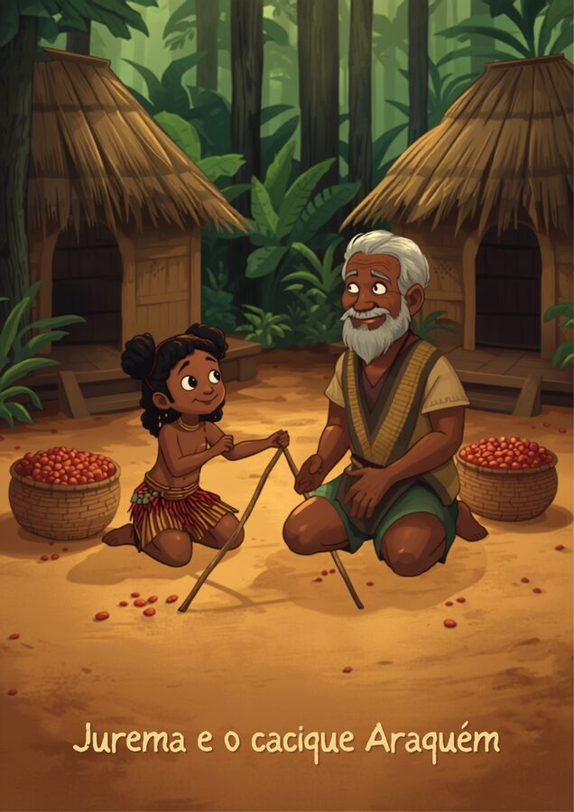

🛶 As varas de amarrar de Jurema
Na aldeia do povo Ticuna, na exuberante região do Alto Solimões, a jovem Jurema está animada: hoje ela vai ajudar seu avô, o sábio cacique Araquém, a preparar as varas de madeira para construir uma nova estrutura para secar sementes de urucum. Os Ticuna são o maior povo indígena da Amazônia brasileira e dominam a arte de construir estruturas, suportes e utensílios firmes usando recursos da floresta.
Jurema recolhe três varas caídas no chão. Uma delas é bem comprida, e as outras duas são gravetos bem curtinhos. "Vovô, com essas três varas nós conseguimos amarrar as pontas e formar um suporte de três lados firme?", pergunta Jurema. O avô Araquém olha com carinho para a tentativa da neta e diz: "Tente juntar as pontas deles, Jurema. Veja se eles conseguem se encontrar."
Por mais que Jurema estique as varas, os dois gravetos curtos não alcançam as pontas um do outro se estiverem apoiados na vara maior! Ela descobre que, na natureza, para que três varas se unam e fiquem firmes, há um segredo de tamanho entre elas.

📏 A condição de existência do triângulo
Para três segmentos formarem um triângulo, existe uma regra simples, chamada desigualdade triangular: a soma de quaisquer dois lados precisa ser maior que o terceiro lado. Se isso não acontecer, os segmentos não se encontram — e o triângulo não existe.
Exemplo que fecha
3 + 4 = 7, que é maior que 5 → fecha! ✅ (é o famoso triângulo 3-4-5)
Exemplo que não fecha
2 + 3 = 5, que é menor que 6 → não fecha ❌ (os dois lados menores nem se encostam no terceiro)
Antes de começar: o que é um arco?
Para desenhar o triângulo vamos usar o compasso: um instrumento com duas hastes presas por uma dobradiça. Uma das pontas é a ponta seca (uma agulha, que fica fixa e parada em um ponto do papel); a outra ponta tem um grafite, que gira ao redor da ponta seca sem mudar de abertura.
Quando o grafite gira mantendo sempre a mesma abertura, ele desenha um arco: um pedacinho de circunferência, onde todo ponto está exatamente à mesma distância (o raio) da ponta seca. É por isso que dizemos "trace um arco de raio b a partir do ponto A" — significa: fixe a ponta seca em A, abra o compasso na medida b (usando a régua) e gire, deixando o grafite riscar o papel.
O compasso: ponta seca fixa em A, grafite gira e risca o arco.
Passo a passo para traçar um arco:
- Meça com a régua a abertura desejada (o raio do arco).
- Trave o compasso nessa medida, sem deixar as pernas escorregarem.
- Fixe bem a ponta seca no ponto de referência (por exemplo, A).
- Gire o compasso em torno da ponta seca, deixando o grafite tocar o papel — isso desenha o arco.
Construindo com régua e compasso
Conhecendo as medidas dos três lados, dá para desenhar o triângulo com régua e compasso, sem precisar medir ângulo nenhum:
- Desenhe um dos lados com a régua — esse vira o segmento AB.
- Abra o compasso com a medida do segundo lado e trace um arco a partir de A.
- Abra o compasso com a medida do terceiro lado e trace um arco a partir de B.
- Onde os dois arcos se cruzam é o ponto C. Ligue A–C e B–C: seu triângulo está pronto!
Os dois arcos (o "compasso") se cruzam exatamente no ponto C.
✏️ Vamos treinar
🖐️ Estique as varetas
Ajuste as três medidas abaixo e veja ao vivo se elas fecham um triângulo ou não.
–
Missões
🪢 Nós que amarram sua cultura
Redes de pesca, cercas de bambu, armadilhas e tendas: várias construções tradicionais só "fecham" se as medidas das varas ou cordas obedecerem a regras parecidas com a desigualdade triangular.
Pense em uma construção amarrada ou trançada do seu contexto
Descreva a construção e explique: o que aconteceria se as medidas das varas ou cordas fossem escolhidas de qualquer jeito, sem seguir uma regra?
✅ Antes de seguir em frente
Marque com sinceridade. Isto não vale nota — é um mapa para você (e seu professor) saberem onde reforçar.
🎮 Fecha ou não fecha?
Veja os três "canudinhos" da rodada e decida: esses tamanhos fecham um triângulo ou não?
Esses lados fecham um triângulo?